Sorted at home, waste can be sold or turned into compost. Mixed together, it is just rubbish.

The same waste can end up two ways. Which way is decided at home.
The cheapest waste is the waste you never bring home.
The smoke irritates the eyes, nose and throat. Tiny particles go deep into the lungs.
Instead: sort it, sell it, compost it.Sorting keeps waste worth something. Mixed, it is worth nothing.
Wrap broken glass and needles. Sort properly. Treat waste workers with dignity.
The 7-day challenge. Weigh what leaves your home for a week, then work out what it is worth.
A home that sorts has a habit. A street that sorts can ask for sorted collection.
Form a team. Map who already collects waste, who cleans up, and who could help.
With permission, put out model bins in the three colours. Sort a heap of mixed waste in public, and explain why sorting is everyone’s responsibility, morally and legally.
Meet the local authority, collectors, shops, schools and scrap dealers. Agree who keeps each area clean.
Ask collectors to keep sorted waste sorted. Ask the municipality, or its contractor, to take charge of collection.
Each province and region has its own law. These are the most a court can order, not what everyone pays.